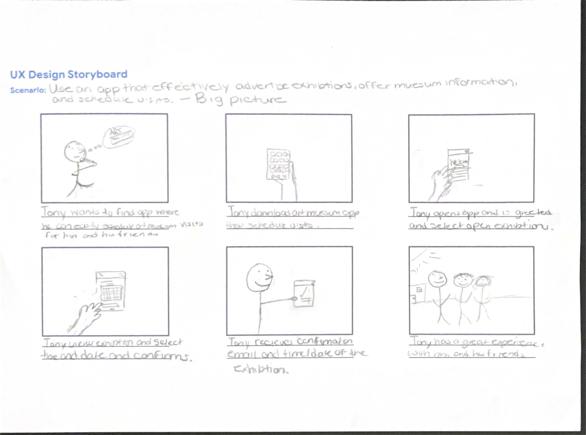
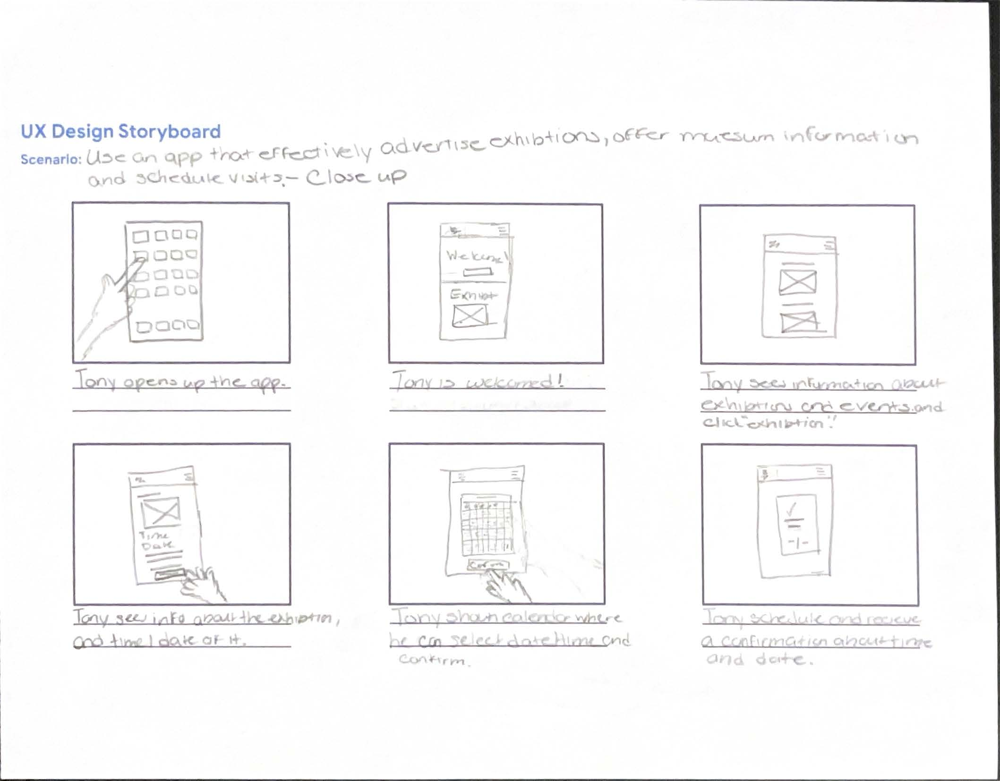

Big Picture Storyboard
This big picture storyboard illustrates a scenario involving Tony, a fictional user facing a challenge, and demonstrates how an art museum app addresses their need to schedule visits. It provides a broad overview, emphasizing the user's experience and the app's utility in meeting their needs.

Close-Up Storyboard
This close-up storyboard provides an in-depth exploration of the app's functionality and features. It zooms in on the user's interactions and expressions, emphasizing how the app enhances their experience.